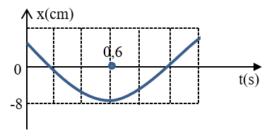
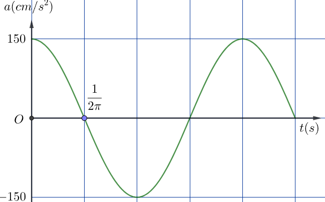
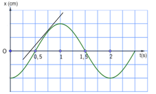

PHẦN III. Câu trắc nghiệm trả lời ngắn
Điền đáp số (có thể dùng dấu phẩy hoặc dấu chấm thập phân). Mỗi câu 0,25 điểm.
1
Một chất điểm dao động điều hòa trên trục Ox. Đồ thị bên biểu diễn một phần li độ của chất điểm theo thời gian. Lấy $\pi = 3{,}14$, tốc độ cực đại của chất điểm bằng bao nhiêu cm/s? (Kết quả lấy 1 chữ số thập phân)

cm/s
2
Một vật dao động điều hòa có đồ thị gia tốc theo thời gian như hình vẽ. Lấy $\pi^{2}=10$. Biên độ dao động của vật là bao nhiêu cm? (Kết quả lấy 1 chữ số thập phân)

cm
3
Một con lắc lò xo gồm lò xo có độ cứng 20 N/m và viên bi có khối lượng 0,2 kg dao động điều hòa. Tại thời điểm t, vận tốc và gia tốc của viên bi lần lượt là 20 cm/s và  m/s$^2$. Biên độ dao động của viên bi là bao nhiêu cm?
m/s$^2$. Biên độ dao động của viên bi là bao nhiêu cm?
m/s$^2$. Biên độ dao động của viên bi là bao nhiêu cm? cm
4
Trong tiết bài tập Vật Lý, Nam xác định vận tốc của vật dao động điều hoà bằng cách kẻ tiếp tuyến với đồ thị tại thời điểm t = 0,75 s (ứng với li độ 7,2 cm) như hình vẽ. Tiếp tuyến cắt trục Ot tại vị trí t = 0,44 s. Hãy tính vận tốc của vật ở thời điểm t = 0,75 s theo cách làm của Nam? (Kết quả làm tròn đến một chữ số ở phần thập phân và tính theo đơn vị cm/s).

cm/s
5
Một vật dao động điều hòa có vận tốc và li độ tại thời điểm $t_1$ và $t_2$ tương ứng là $v_1 = 20$ cm/s, $x_1 = 8\sqrt{3}$ cm và $v_2 = 20\sqrt{2}$ cm/s, $x_2 = 8\sqrt{2}$ cm. Biên độ dao động của vật bằng bao nhiêu cm?
cm
6
Một vật dao động điều hòa dọc theo trục Ox. Biết vận tốc của vật khi qua vị trí cân bằng là 62,8 cm/s và gia tốc của vật ở vị trí biên là 2 m/s$^2$. Lấy $\pi^{2}=10$. Chu kì dao động của vật là bao nhiêu giây? (kết quả làm tròn đến phần nguyên).
s